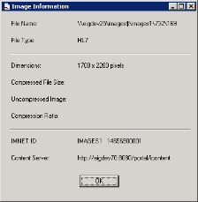
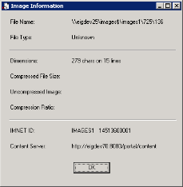

This function enables you to view technical information for the currently displayed document.
The system displays the Image Information dialog box, which contains the file name, file type, dimensions (in pixels for an image file, and in number of characters and lines for a text file), compressed and uncompressed file size, compression ratio, and information about where the image is located.
For example:

